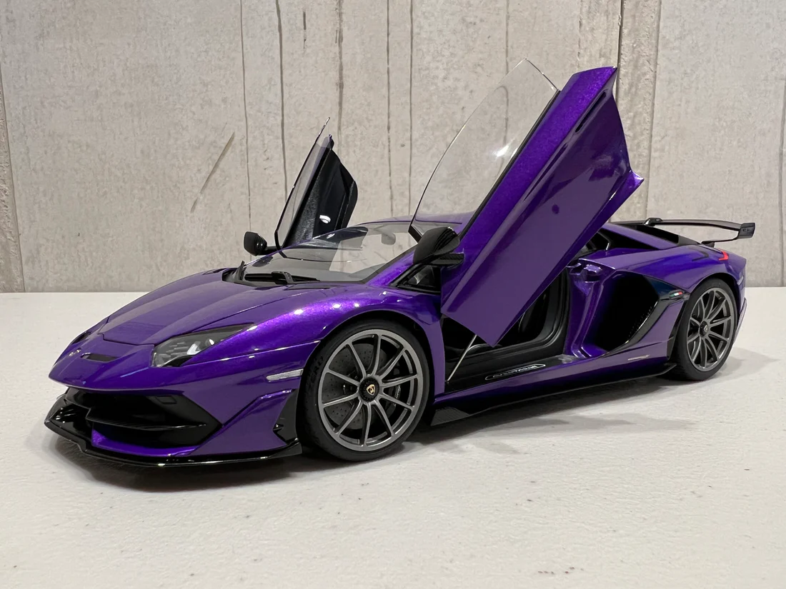

La Lamborghini Aventador est une supercar phare hautes performances produite par le constructeur automobile italien Lamborghini


Années de production :La Lamborghini Aventador a été introduite en 2011 en remplacement de la Lamborghini Murciélago et reste en production depuis ma dernière mise à jour des connaissances en septembre 2021.
Design L'Aventador est connue pour son design saisissant et agressif. Il présente les lignes nettes caractéristiques de Lamborghini, des portes à ciseaux et une position large et surbaissée.
Le design de la voiture a été influencé par l'aérodynamique et intègre une gamme d'éléments aérodynamiques pour améliorer ses performances.
Moteur : L'Aventador est propulsée par un moteur V12 de 6,5 litres monté au centre, qui produit plus de 700 chevaux et, dans les variantes ultérieures, encore plus.
La puissance du moteur varie selon le modèle, avec des versions haut de gamme comme l'Aventador SVJ dépassant les 770 chevaux.
Performance :L'Aventador est célébrée pour ses performances incroyables. Il peut accélérer de 0 à 60 mph en moins de 3 secondes et a une vitesse de pointe pouvant dépasser 200 mph.
La transmission intégrale, les systèmes de suspension avancés et le châssis léger en fibre de carbone contribuent à ses performances remarquables.
Variantes : L'Aventador propose de nombreuses variantes et éditions spéciales, dont l'Aventador Roadster (cabriolet), l'Aventador S, l'Aventador SV (Superveloce) et l'Aventador SVJ (Superveloce Jota), entre autres. Ces variantes offrent différents niveaux de puissance, de maniabilité et d’amélioration des performances.
Intérieur :L'intérieur de l'Aventador est un mélange de luxe et de technologie de pointe. Il est fabriqué à partir de matériaux de haute qualité, notamment du cuir et de la fibre de carbone, et est équipé d'une gamme de fonctionnalités avancées d'infodivertissement et d'aide à la conduite.
Héritage : La Lamborghini Aventador est considérée comme un modèle phare et un symbole de l'engagement sans compromis de Lamborghini envers la performance, le style et l'innovation.
Elle a laissé une marque significative sur le monde des supercars et est connue pour sa présence audacieuse et dramatique.
Avancées technologiques : L'Aventador a incorporé des technologies avancées, telles qu'une transmission manuelle automatisée ISR (Independent Shifting Rod) et le premier système de suspension à tige de poussée de Lamborghini, contribuant à sa maniabilité et à sa qualité de roulement exceptionnelles.
Successeur : de mes connaissances, Lamborghini n'avait pas officiellement présenté de successeur direct à l'Aventador. Cependant, Lamborghini suit généralement un cycle de modèle générationnel, il est donc probable qu'un successeur soit en cours de développement.
La Lamborghini Aventador est une supercar qui présente le meilleur des prouesses en matière d'ingénierie et de conception de Lamborghini. Elle est connue pour ses performances extrêmes, son style distinctif et son statut de modèle phare de la gamme Lamborghini.
Veuillez noter qu'il peut y avoir eu des mises à jour ou des nouveaux développements liés à l'Aventador depuis ma dernière mise à jour des connaissances en septembre 2021.